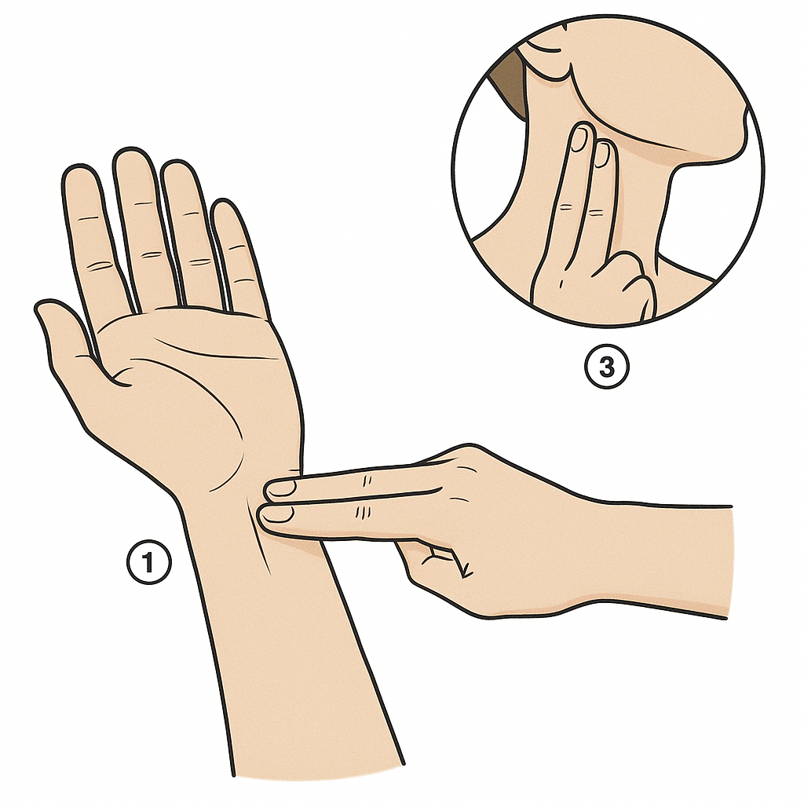

Fitxa Sessió 5 · Respiració i esforç: la FC · IE Temple
✕
🏃
El nostre cos en marxa · Sessió 5 de 7
Respiració i esforç: la freqüència cardíaca
Avui resolem els dos enigmes de la paret — i les dades les poses tu
3r ESO
✕
Amb suport visual
✕
⏱️ 2h total
✕
Nom:
✕
Data: C
✕
✕
🎯 Objectius d'aprenentatge d'avui
Sé mesurar el meu pols al canell i calcular els batecs per minut.
Sé que quan faig exercici el cor batega més ràpid perquè els músculs necessiten més oxigen.
Sé calcular la meva FC màxima amb la fórmula 220 − edat.
Sé llegir una gràfica de FC: trobar el pic i veure quan torna al repòs.
Sé que una persona entrenada es recupera més ràpid que una de sedentària.
✕
📖 Vocabulari clau d'avui
freqüència cardíaca (FC) = batecs del cor en un minutbat/min = batecs per minut, la unitat de la FCFCmàx = FC màxima del teu cor ≈ 220 − edatzona aeròbica = esforç moderat, amb prou O₂zona anaeròbica = esforç màxim, falta O₂ → àcid làcticrecuperació = temps que triga la FC a tornar al repòsalvèol = saquet del pulmó on l'O₂ entra a la sanghemoglobina = proteïna amb ferro que transporta l'O₂
✕
0
Idees prèvies — els dos enigmes de la paret
Individual · ⏱️ 5 min · No es corregeix ara: la compararàs al final
Per quina raó creus que augmenta la freqüència cardíaca quan fas exercici? Escriu la teva hipòtesi ara.
Crec que el cor batega més ràpid perquè
🔢 Les teves estimacions (abans de mesurar res)
La meva FC en repòs, ara mateix, crec que és de bat/min.
La FC màxima que crec que puc assolir és de bat/min.
Després de l'exercici, crec que trigaré minuts a tornar al repòs.
Després de l'experiment tornaràs aquí a comprovar si ho havies encertat.
✕
🔗
Connexió amb la Sessió 4 (el cor per dins): vas tenir el cor a les mans i vas veure que el ventricle esquerre és el múscul que empeny la sang a tot el cos. Avui mesuraràs com aquest múscul canvia de ritme segons el que el cos necessita — i resoldrem els dos enigmes que pengen a la paret des de la Sessió 1.
✕
1
Mesura la teva FC — l'experiment
Tota la classe alhora · ⏱️ 35 min · Sense aparells: només els teus dits i un rellotge
✕
📋 Com mesurar el pols
Col·loca 2 dits (índex i mig, mai el polze) al canell o al coll.
Compta els batecs durant 15 segons.
Multiplica × 4 → bat/min.
✕
⚠️ Protocol de seguretat
Si et mareges o et fa mal el pit, para immediatament i avisa el professor. No hi ha cap nota a guanyar si et trobes malament.
✕

🖼️ On buscar el pols (canell i coll)
Figura 1. Tens dues opcions per trobar el pols (tria'n una): al canell o al coll. Hi poses dos dits —l'índex i el mig, mai el polze— i prems fluix: si prems massa fort, deixaràs de notar-lo.
✕💡 Exemple de càlcul: si comptes 18 batecs en 15 segons → 18 × 4 = 72 bat/min.
Moment
Temps
La teva FC (bat/min)
FC company/a (bat/min)
Diferència
Repòs (inici)
0 min
Repòs
1 min
Repòs
2 min
🏃 EXERCICI (2 minuts)
—
Salt a peu coix o cursa al passadís · mesura la FC just el segon que pares
Just en parar
0 s
Recuperació
1 min
Recuperació
2 min
Recuperació
3 min
Recuperació
4 min
Recuperació
5 min
✕
📖 Per llegir — Per quina raó t'ha pujat la FC?
🏃 El múscul treballa→🔋 Gasta més energia (ATP)→🫧 Necessita més O₂→🩸 La sang n'ha de portar més→❤️ El cor batega més ràpid i fort
Els músculs treballen i gasten energia. Per fer energia necessiten oxigen. L'oxigen viatja per la sang. Per portar més oxigen, el cor batega més ràpid. I els pulmons respiren més de pressa.
✕
Calcula la teva FC màxima pas a pas:
👀 Exemple ja resolt — la Bruna té 13 anys. Primer: FCmàx = 220 − 13 = 207 bat/min. Després busca «13 anys» a la taula de sota: el seu llindar és 176 bat/min. Vol dir que, si la FC de la Bruna passa de 176, ja està a la zona anaeròbica.
1️⃣ La meva edat: anys.
2️⃣ FCmàx = 220 − la meva edat = bat/min. (o copia'l de la columna del mig de la taula)
3️⃣ El meu llindar anaeròbic (FCmàx × 0,85). No cal que multipliquis: busca la teva edat a la taula i copia el número de la columna verda.
La teva edat
FCmàx (220 − edat)
El teu llindar (× 0,85)
12 anys
208
177
13 anys
207
176
14 anys
206
175
15 anys
205
174
16 anys
204
173
El meu llindar anaeròbic és bat/min.
4️⃣ La meva FC just en acabar l'exercici ha estat de bat/min → he estat a la zona: Aeròbica Anaeròbica
Escala de zones de FC (% de la teva FCmàx):
Zona aeròbica · 60–85% FCmàx
Anaeròbica >85%
FCmàx →
✕
📖 Per llegir — Les dues zones d'esforç
Zona aeròbica: vas a ritme mitjà. Arriba prou oxigen. Pots aguantar molta estona.
Zona anaeròbica: vas al màxim. Falta oxigen. Es fa àcid làctic i el múscul "crema". Només pots aguantar uns minuts.
✕
🔬
Pensa-hi — Ens podem fiar de les nostres dades?
Hem fet un experiment de debò. Però és prou bo? Encercla la resposta que et sembli correcta:
1. Un estudi és més fiable si el fan moltes persones / poques persones.
2. Nosaltres només som una classe (uns 20). La nostra mostra (la gent estudiada) és gran / petita.
3. Tothom ha fet exactament el mateix exercici, la mateixa estona? sí / no. Si no, les condicions no estaven ben controlades.
4. Conclusió: una revista científica acceptaria / encara no acceptaria les nostres dades.
✕
2
La gràfica de la teva FC
Individual · ⏱️ 10 min · Marca un punt per cada fila de la taula i uneix-los amb una línia
✕
La meva gràfica de FC● = punt mesurat · uneix els punts amb una línia
Persona sedentària — línia discontínua (FC repòs ≈75 bat/min)
✕
📖 Per llegir — El cor entrenat
El cor d'un esportista és més fort. Amb un sol batec envia molta sang. Per això en repòs batega més lent. I després de l'esforç es recupera abans.
✕
① Qui té la FC de repòs més baixa?
✕
② Qui arriba a una FC més alta durant l'esforç?
✕
③ En acabar l'esforç, qui torna primer al seu valor de repòs?
✕
④ Completa la conclusió
L'esportista es recupera més ràpid perquè el seu cor, amb cada batec, envia sang, i així elimina abans el CO₂ i l'àcid làctic.
✕
🎯 Torna als objectius del principi — Marca el que has après avui:
Sé mesurar el meu pols al canell i calcular els batecs per minut.
Sé que quan faig exercici el cor batega més ràpid perquè els músculs necessiten més oxigen.
Sé calcular la meva FC màxima amb la fórmula 220 − edat.
Sé llegir una gràfica de FC: trobar el pic i veure quan torna al repòs.
Sé que una persona entrenada es recupera més ràpid que una de sedentària.
🪞 La meva hipòtesi inicial (apartat 0) era encertada? En què m'equivocava?
❓ Encara em pregunto…
✕
📚 Tasca per a casa — els propers 3 matins (prepara la Sessió 6)
Just en llevar-te (abans d'esmorzar ni moure't gaire), mesura la teva FC en repòs: compta els batecs durant 30 segons i multiplica × 2. Apunta-ho aquí:
Matí
Data
Hora de llevar-te
FC en repòs (bat/min)
Notes (mal dormit, malalt/a…)
Matí 1
Matí 2
Matí 3
A partir de les teves dades, formula una pregunta d'investigació pròpia:
Exemple de pregunta: «Per quina raó la meva FC és diferent el dia que he dormit menys?»
Per quina raó
⚠️ Porta aquesta fitxa a la Sessió 6. Posarem en comú les dades de tota la classe. ⏱️ 2 min cada matí · No es pot fer amb IA: les pulsacions són teves.